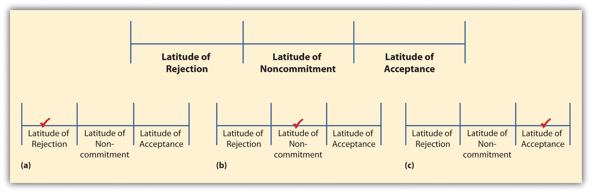
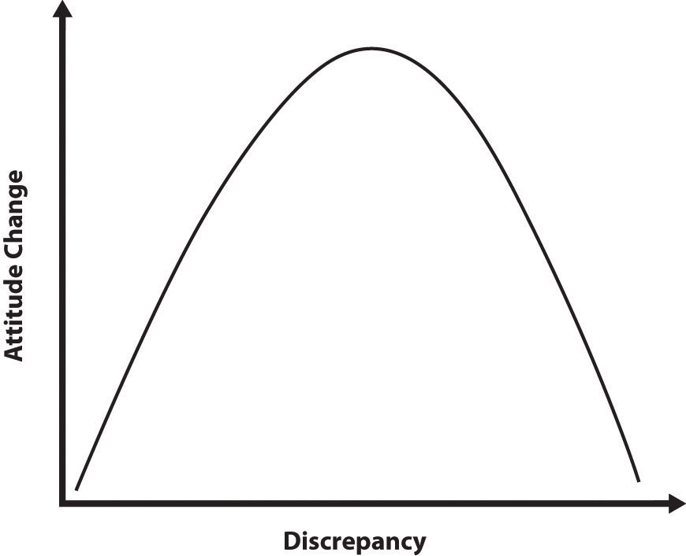

Every day we are bombarded by persuasive messages. Some messages are mediated and designed to get us to purchase specific products or vote for specific candidates, while others might come from our loved ones and are designed to get us to help around the house or join the family for game night. Whatever the message being sent, we are constantly being persuaded and persuading others. In this chapter, we are going to focus on persuasive speaking. We will first talk about persuasion as a general concept. We will then examine four different types of persuasive speeches, and finally, we’ll look at three organizational patterns that are useful for persuasive speeches.
In his text The Dynamics of Persuasion: Communication and Attitudes in the 21st Century, Richard Perloff noted that the study of persuasion today is extremely important for five basic reasons:
In essence, the nature of persuasion has changed over the last fifty years as a result of the influx of various types of technology. People are bombarded by persuasive messages in today’s world, so thinking about how to create persuasive messages effectively is very important for modern public speakers. A century (or even half a century) ago, public speakers had to contend only with the words printed on paper for attracting and holding an audience’s attention. Today, public speakers must contend with laptops, netbooks, iPads, smartphones, billboards, television sets, and many other tools that can send a range of persuasive messages immediately to a target audience. Thankfully, scholars who study persuasion have kept up with the changing times and have found a number of persuasive strategies that help speakers be more persuasive.
We defined persuasionThe process an individual goes through attempting to get another person to behave in a manner or embrace a point of view related to values, attitudes, or beliefs that he or she would not have done otherwise. earlier in this text as an attempt to get a person to behave in a manner, or embrace a point of view related to values, attitudes, and beliefs, that he or she would not have done otherwise.
The first type of persuasive public speaking involves a change in someone’s attitudes, values, and beliefs. An attitudeAn individual’s general predisposition toward something as being good or bad, right or wrong, negative or positive, and so on. is defined as an individual’s general predisposition toward something as being good or bad, right or wrong, or negative or positive. Maybe you believe that local curfew laws for people under twenty-one are a bad idea, so you want to persuade others to adopt a negative attitude toward such laws.
You can also attempt to persuade an individual to change her or his value toward something. ValueAn individual’s perception of the usefulness, importance, or worth of something. refers to an individual’s perception of the usefulness, importance, or worth of something. We can value a college education or technology or freedom. Values, as a general concept, are fairly ambiguous and tend to be very lofty ideas. Ultimately, what we value in life actually motivates us to engage in a range of behaviors. For example, if you value technology, you are more likely to seek out new technology or software on your own. On the contrary, if you do not value technology, you are less likely to seek out new technology or software unless someone, or some circumstance, requires you to.
Lastly, you can attempt to get people to change their personal beliefs. BeliefsPropositions or positions that an individual holds as true or false without positive knowledge or proof. are propositions or positions that an individual holds as true or false without positive knowledge or proof. Typically, beliefs are divided into two basic categories: core and dispositional. Core beliefsBeliefs that people have actively engaged in and created over the course of their lives. are beliefs that people have actively engaged in and created over the course of their lives (e.g., belief in a higher power, belief in extraterrestrial life forms). Dispositional beliefsBeliefs that people have not actively engaged in; judgments based on related subjects, which people make when they encounter a proposition., on the other hand, are beliefs that people have not actively engaged in but rather judgments that they make, based on their knowledge of related subjects, when they encounter a proposition. For example, imagine that you were asked the question, “Can stock cars reach speeds of one thousand miles per hour on a one-mile oval track?” Even though you may never have attended a stock car race or even seen one on television, you can make split-second judgments about your understanding of automobile speeds and say with a fair degree of certainty that you believe stock cars cannot travel at one thousand miles per hour on a one-mile track. We sometimes refer to dispositional beliefs as virtual beliefs.Frankish, K. (1998). Virtual belief. In P. Carruthers & J. Boucher (Eds.), Language and thought (pp. 249–269). Cambridge, UK: Cambridge University Press.
As we explained in Chapter 6 "Finding a Purpose and Selecting a Topic", when it comes to persuading people to alter core and dispositional beliefs, persuading audiences to change core beliefs is more difficult than persuading audiences to change dispositional beliefs. For this reason, you are very unlikely to persuade people to change their deeply held core beliefs about a topic in a five- to ten-minute speech. However, if you give a persuasive speech on a topic related to an audience’s dispositional beliefs, you may have a better chance of success. While core beliefs may seem to be exciting and interesting, persuasive topics related to dispositional beliefs are generally better for novice speakers with limited time allotments.
The second type of persuasive speech is one in which the speaker attempts to persuade an audience to change their behavior. Behaviors come in a wide range of forms, so finding one you think people should start, increase, or decrease shouldn’t be difficult at all. Speeches encouraging audiences to vote for a candidate, sign a petition opposing a tuition increase, or drink tap water instead of bottled water are all behavior-oriented persuasive speeches. In all these cases, the goal is to change the behavior of individual listeners.
Frymier and Nadler enumerate three reasons why people should study persuasion.Frymier, A. B., & Nadler, M. K. (2007). Persuasion: Integrating theory, research, and practice. Dubuque, IA: Kendall/Hunt. First, when you study and understand persuasion, you will be more successful at persuading others. If you want to be a persuasive public speaker, then you need to have a working understanding of how persuasion functions.
Second, when people understand persuasion, they will be better consumers of information. As previously mentioned, we live in a society where numerous message sources are constantly fighting for our attention. Unfortunately, most people just let messages wash over them like a wave, making little effort to understand or analyze them. As a result, they are more likely to fall for half-truths, illogical arguments, and lies. When you start to understand persuasion, you will have the skill set to actually pick apart the messages being sent to you and see why some of them are good and others are simply not.
Lastly, when we understand how persuasion functions, we’ll have a better grasp of what happens around us in the world. We’ll be able to analyze why certain speakers are effective persuaders and others are not. We’ll be able to understand why some public speakers can get an audience eating out of their hands, while others flop.
Furthermore, we believe it is an ethical imperative in the twenty-first century to be persuasively literate. We believe that persuasive messages that aim to manipulate, coerce, and intimidate people are unethical, as are messages that distort information. As ethical listeners, we have a responsibility to analyze messages that manipulate, coerce, and/or intimidate people or distort information. We also then have the responsibility to combat these messages with the truth, which will ultimately rely on our own skills and knowledge as effective persuaders.
Understanding how people are persuaded is very important to the discussion of public speaking. Thankfully, a number of researchers have created theories that help explain why people are persuaded. While there are numerous theories that help to explain persuasion, we are only going to examine three here: social judgment theory, cognitive dissonance theory, and the elaboration likelihood model.
Muzafer Sherif and Carl Hovland created social judgment theory in an attempt to determine what types of communicative messages and under what conditions communicated messages will lead to a change in someone’s behavior.Sherif, M., & Hovland, C. I. (1961). Social judgment: Assimilation and contrast effects in communication and attitude change. New Haven, CT: Yale University Press. In essence, Sherif and Hovland found that people’s perceptions of attitudes, values, beliefs, and behaviors exist on a continuum including latitude of rejectionRange of acceptable behaviors or thoughts individuals will reject as discussed by Muzafer Sherif and Carl Hovland’s (1961) social judgment theories., latitude of noncommitmentRange of behaviors or thoughts individuals have no strong opinion for as discussed by Muzafer Sherif and Carl Hovland’s (1961) social judgment theories., and latitude of acceptanceRange of acceptable behaviors or thoughts individuals will accept as discussed by Muzafer Sherif and Carl Hovland’s (1961) social judgment theories. (Figure 17.1 "Latitudes of Judgments").
Figure 17.1 Latitudes of Judgments
Imagine that you’re planning to persuade your peers to major in a foreign language in college. Some of the students in your class are going to disagree with you right off the bat (latitude of rejection, part (a) of Figure 17.1 "Latitudes of Judgments"). Other students are going to think majoring in a foreign language is a great idea (latitude of acceptance, part (c) of Figure 17.1 "Latitudes of Judgments"). Still others are really going to have no opinion either way (latitude of noncommitment, part (b) of Figure 17.1 "Latitudes of Judgments"). Now in each of these different latitudes there is a range of possibilities. For example, one of your listeners may be perfectly willing to accept the idea of minoring in a foreign language, but when asked to major or even double major in a foreign language, he or she may end up in the latitude of noncommitment or even rejection.
Not surprisingly, Sherif and Hovland found that persuasive messages were the most likely to succeed when they fell into an individual’s latitude of acceptance. For example, if you are giving your speech on majoring in a foreign language, people who are in favor of majoring in a foreign language are more likely to positively evaluate your message, assimilate your advice into their own ideas, and engage in desired behavior. On the other hand, people who reject your message are more likely to negatively evaluate your message, not assimilate your advice, and not engage in desired behavior.
In an ideal world, we’d always be persuading people who agree with our opinions, but that’s not reality. Instead, we often find ourselves in situations where we are trying to persuade others to attitudes, values, beliefs, and behaviors with which they may not agree. To help us persuade others, what we need to think about is the range of possible attitudes, values, beliefs, and behaviors that exist. For example, in our foreign language case, we may see the following possible opinions from our audience members:
These seven possible opinions on the subject do not represent the full spectrum of choices, but give us various degrees of agreement with the general topic. So what does this have to do with persuasion? Well, we’re glad you asked. Sherif and Hovland theorized that persuasion was a matter of knowing how great the discrepancy or difference was between the speaker’s viewpoint and that of the audience. If the speaker’s point of view was similar to that of audience members, then persuasion was more likely. If the discrepancy between the idea proposed by the speaker and the audience’s viewpoint is too great, then the likelihood of persuasion decreases dramatically.
Figure 17.2 Discrepancy and Attitude Change
Furthermore, Sherif and Hovland predicted that there was a threshold for most people where attitude change wasn’t possible and people slipped from the latitude of acceptance into the latitude of noncommitment or rejection. Figure 17.2 "Discrepancy and Attitude Change" represents this process. All the area covered by the left side of the curve represents options a person would agree with, even if there is an initial discrepancy between the speaker and audience member at the start of the speech. However, there comes a point where the discrepancy between the speaker and audience member becomes too large, which move into the options that will be automatically rejected by the audience member. In essence, it becomes essential for you to know which options you can realistically persuade your audience to and which options will never happen. Maybe there is no way for you to persuade your audience to major or double major in a foreign language, but perhaps you can get them to minor in a foreign language. While you may not be achieving your complete end goal, it’s better than getting nowhere at all.
In 1957, Leon Festinger proposed another theory for understanding how persuasion functions: cognitive dissonance theory.Festinger, L. (1957). A theory of cognitive dissonance. Evanston, IL: Row, Peterson, & Company. Cognitive dissonanceAn aversive motivational state that occurs when an individual entertains two or more contradictory attitudes, values, beliefs, or behaviors simultaneously. is an aversive motivational state that occurs when an individual entertains two or more contradictory attitudes, values, beliefs, or behaviors simultaneously. For example, maybe you know you should be working on your speech, but you really want to go to a movie with a friend. In this case, practicing your speech and going to the movie are two cognitions that are inconsistent with one another. The goal of persuasion is to induce enough dissonance in listeners that they will change their attitudes, values, beliefs, or behaviors.
Frymier and Nadler noted that for cognitive dissonance to work effectively there are three necessary conditions: aversive consequences, freedom of choice, and insufficient external justification.Frymier, A. B., & Nadler, M. K. (2007). Persuasion: Integrating theory, research, and practice. Dubuque, IA: Kendall/Hunt. First, for cognitive dissonance to work, there needs to be a strong enough aversive consequence, or punishment, for not changing one’s attitudes, values, beliefs, or behaviors. For example, maybe you’re giving a speech on why people need to eat more apples. If your aversive consequence for not eating apples is that your audience will not get enough fiber, most people will simply not be persuaded, because the punishment isn’t severe enough. Instead, for cognitive dissonance to work, the punishment associated with not eating apples needs to be significant enough to change behaviors. If you convince your audience that without enough fiber in their diets they are at higher risk for heart disease or colon cancer, they might fear the aversive consequences enough to change their behavior.
The second condition necessary for cognitive dissonance to work is that people must have a freedom of choice. If listeners feel they are being coerced into doing something, then dissonance will not be aroused. They may alter their behavior in the short term, but as soon as the coercion is gone, the original behavior will reemerge. It’s like the person who drives more slowly when a police officer is nearby but ignores speed limits once officers are no longer present. As a speaker, if you want to increase cognitive dissonance, you need to make sure that your audience doesn’t feel coerced or manipulated, but rather that they can clearly see that they have a choice of whether to be persuaded.
The final condition necessary for cognitive dissonance to work has to do with external and internal justifications. External justificationThe process of identifying reasons outside of one’s own control to support one’s behavior, beliefs, and attitudes. refers to the process of identifying reasons outside of one’s own control to support one’s behavior, beliefs, and attitudes. Internal justificationThe process of reducing cognitive dissonance by voluntarily changing a behavior, belief, or attitude. occurs when someone voluntarily changes a behavior, belief, or attitude to reduce cognitive dissonance. When it comes to creating change through persuasion, external justifications are less likely to result in change than internal justifications.Festinger, L., & Carlsmith, J. M. (1959). Cognitive consequences of forced compliance. Journal of Abnormal and Social Psychology, 58, 203–210. Imagine that you’re giving a speech with the specific purpose of persuading college students to use condoms whenever they engage in sexual intercourse. Your audience analysis, in the form of an anonymous survey, indicates that a large percentage of your listeners do not consistently use condoms. Which would be the more persuasive argument: (a) “Failure to use condoms inevitably results in unintended pregnancy and sexually transmitted infections, including AIDS”—or (b) “If you think of yourself as a responsible adult, you’ll use condoms to protect yourself and your partner”? With the first argument, you have provided external justification for using condoms (i.e., terrible things will happen if you don’t use condoms). Listeners who reject this external justification (e.g., who don’t believe these dire consequences are inevitable) are unlikely to change their behavior. With the second argument, however, if your listeners think of themselves as responsible adults and they don’t consistently use condoms, the conflict between their self-image and their behavior will elicit cognitive dissonance. In order to reduce this cognitive dissonance, they are likely to seek internal justification for the view of themselves as responsible adults by changing their behavior (i.e., using condoms more consistently). In this case, according to cognitive dissonance theory, the second persuasive argument would be the one more likely to lead to a change in behavior.
The last of the three theories of persuasion discussed here is the elaboration likelihood model created by Petty and Cacioppo.Petty, R. E., & Cacioppo, J. T. (1986). The elaboration likelihood model of persuasion. Advances in Experimental Social Psychology, 19, 123–205. The basic model has a continuum from high elaboration or thought or low elaboration or thought. For the purposes of Petty and Cacioppo’s model, the term elaborationThe amount of thought or cognitive energy someone uses for analyzing the content of a message. refers to the amount of thought or cognitive energy someone uses for analyzing the content of a message. High elaboration uses the central routeActivity of truly analyzing a message using cognitive energy to ascertain the arguments set forth within the message. and is designed for analyzing the content of a message. As such, when people truly analyze a message, they use cognitive energy to examine the arguments set forth within the message. In an ideal world, everyone would process information through this central route and actually analyze arguments presented to them. Unfortunately, many people often use the peripheral routeActivity of attending to messages but not analyzing them or using cognitive energy to ascertain the arguments set forth in a message. for attending to persuasive messages, which results in low elaboration or thought. Low elaboration occurs when people attend to messages but do not analyze the message or use cognitive energy to ascertain the arguments set forth in a message.
For researchers of persuasion, the question then becomes: how do people select one route or the other when attending to persuasive messages? Petty and Cacioppo noted that there are two basic factors for determining whether someone centrally processes a persuasive message: ability and motivation. First, audience members must be able to process the persuasive message. If the language or message is too complicated, then people will not highly elaborate on it because they will not understand the persuasive message. Motivation, on the other hand, refers to whether the audience member chooses to elaborate on the message. Frymier and Nadler discussed five basic factors that can lead to high elaboration: personal relevance and personal involvement, accountability, personal responsibility, incongruent information, and need for cognition.Frymier, A. B., & Nadler, M. K. (2007). Persuasion: Integrating theory, research, and practice. Dubuque, IA: Kendall/Hunt.
The first reason people are motivated to take the central route or use high elaboration when listening to a persuasive message involves personal relevance and involvement. Personal relevance refers to whether the audience member feels that he or she is actually directly affected by the speech topic. For example, if someone is listening to a speech on why cigarette smoking is harmful, and that listener has never smoked cigarettes, he or she may think the speech topic simply isn’t relevant. Obviously, as a speaker you should always think about how your topic is relevant to your listeners and make sure to drive this home throughout your speech. Personal involvement, on the other hand, asks whether the individual is actively engaged with the issue at hand: sends letters of support, gives speeches on the topic, has a bumper sticker, and so forth. If an audience member is an advocate who is constantly denouncing tobacco companies for the harm they do to society, then he or she would be highly involved (i.e., would engage in high elaboration) in a speech that attempts to persuade listeners that smoking is harmful.
The second condition under which people are likely to process information using the central route is when they feel that they will be held accountable for the information after the fact. With accountability, there is the perception that someone, or a group of people, will be watching to see if the receiver remembers the information later on. We’ve all witnessed this phenomenon when one student asks the question “will this be on the test?” If the teacher says “no,” you can almost immediately see the glazed eyes in the classroom as students tune out the information. As a speaker, it’s often hard to hold your audience accountable for the information given within a speech.
When people feel that they are going to be held responsible, without a clear external accounting, for the evaluation of a message or the outcome of a message, they are more likely to critically think through the message using the central route. For example, maybe you’re asked to evaluate fellow students in your public speaking class. Research has shown that if only one or two students are asked to evaluate any one speaker at a time, the quality of the evaluations for that speaker will be better than if everyone in the class is asked to evaluate every speaker. When people feel that their evaluation is important, they take more responsibility and therefore are more critical of the message delivered.
Some people are motivated to centrally process information when it does not adhere to their own ideas. Maybe you’re a highly progressive liberal, and one of your peers delivers a speech on the importance of the Tea Party movement in American politics. The information presented during the speech will most likely be in direct contrast to your personal ideology, which causes incongruence because the Tea Party ideology is opposed to a progressive liberal ideology. As such, you are more likely to pay attention to the speech, specifically looking for flaws in the speaker’s argument.
The final reason some people centrally process information is because they have a personality characteristic called need for cognition. Need for cognitionA personality trait characterized by an internal drive or need to engage in critical thinking and information processing. refers to a personality trait characterized by an internal drive or need to engage in critical thinking and information processing. People who are high in need for cognition simply enjoy thinking about complex ideas and issues. Even if the idea or issue being presented has no personal relevance, high need for cognition people are more likely to process information using the central route.
Obviously, there are many different persuasive speech topics you could select for a public speaking class. Anything from localized claims like changing a specific college or university policy to larger societal claims like adding more enforcement against the trafficking of women and children in the United States could make for an interesting persuasive speech. You’ll notice in the previous sentence we referred to the two topics as claims. In this use of the word “claim,” we are declaring the goodness or positivity of an attitude, value, belief, or behavior that others may dispute. As a result of the dispute between our perceptions of the goodness of an attitude, value, belief, or behavior and the perceptions of others, we attempt to support the claim we make using some sort of evidence and logic as we attempt to persuade others. There are four common claims that can be made: definitional, factual, policy, and value.
The first common types of claims that a persuasive speaker can make are definitional or classification claims. Definitional claimsPersuasive claim about the denotation or classification of what something is. are claims over the denotation or classification of what something is. In essence, we are trying to argue for what something is or what something is not. Most definitional claims falling to a basic argument formula:
X is (or is not) a Y because it has (or does not have) features A, B, or C.For example, maybe you’re trying to persuade your class that while therapeutic massage is often performed on nude clients, it is not a form of prostitution. You could start by explaining what therapeutic massage is and then what prostitution is. You could even look at the legal definition of prostitution and demonstrate to your peers that therapeutic massage does not fall into the legal definition of prostitution because it does not involve the behaviors characterized by that definition.
Factual claimsPersuasive claim arguing the truth or falsity of an assertion. set out to argue the truth or falsity of an assertion. Some factual claims are simple to answer: Barack Obama is the first African American President; the tallest man in the world, Robert Wadlow, was eight feet and eleven inches tall; Facebook wasn’t profitable until 2009. All these factual claims are well documented by evidence and can be easily supported with a little research.
However, many factual claims cannot be answered absolutely. Some factual claims are simply hard to determine the falsity or trueness of because the final answer on the subject has not been discovered (e.g., when is censorship good, what rights should animals have, when does life begin). Probably the most historically interesting and consistent factual claim is the existence of a higher power, God, or other religious deity. The simple fact of the matter is that there is not enough evidence to clearly answer this factual claim in any specific direction, which is where the notion of faith must be involved in this factual claim.
Other factual claims that may not be easily answered using evidence are predictions of what may or may not happen. For example, you could give a speech on the future of climate change or the future of terrorism in the United States. While there may be evidence that something will happen in the future, unless you’re a psychic, you don’t actually know what will happen in the future.
When thinking of factual claims, it often helps to pretend that you’re putting a specific claim on trial and as the speaker your job is to defend your claim as a lawyer would defend a client. Ultimately, your job is to be more persuasive than your audience members who act as both opposition attorneys and judges.
The third common claim that is seen in persuasive speeches is the policy claimPersuasive claim that describes the nature of a problem and advocates a solution.—a statement about the nature of a problem and the solution that should be implemented. Policy claims are probably the most common form of persuasive speaking because we live in a society surrounded by problems and people who have ideas about how to fix these problems. Let’s look at a few examples of possible policy claims:
Each of these claims has a clear perspective that is being advocated. Policy claims will always have a clear and direct opinion for what should occur and what needs to change. When examining policy claims, we generally talk about two different persuasive goals: passive agreement and immediate action.
When we attempt to gain the passive agreement of our audiences, our goal is to get our audiences to agree with what we are saying and our specific policy without asking the audience to do anything to enact the policy. For example, maybe your speech is on why the Federal Communications Commission should regulate violence on television like it does foul language (i.e., no violence until after 9 p.m.). Your goal as a speaker is to get your audience to agree that it is in our best interest as a society to prevent violence from being shown on television before 9 p.m., but you are not seeking to have your audience run out and call their senators or congressmen or even sign a petition. Often the first step in larger political change is simply getting a massive number people to agree with your policy perspective.
Let’s look at a few more passive agreement claims:
In each of these claims, the goal is to sway one’s audience to a specific attitude, value, or belief, but not necessarily to get the audience to enact any specific behaviors.
The alternative to passive agreement is immediate action, or persuading your audience to start engaging in a specific behavior. Many passive agreement topics can become immediate action-oriented topics as soon as you tell your audience what behavior they should engage in (e.g., sign a petition, call a senator, vote). While it is much easier to elicit passive agreement than to get people to do something, you should always try to get your audience to act and do so quickly. A common mistake that speakers make is telling people to enact a behavior that will occur in the future. The longer it takes for people to engage in the action you desire, the less likely it is that your audience will engage in that behavior.
Here are some examples of good claims with immediate calls to action:
Each of these three examples starts with a basic claim and then tags on an immediate call to action. Remember, the faster you can get people to engage in a behavior the more likely they actually will.
The final type of claim is a value claimPersuasive claim advocating a judgment about something (e.g., it’s good or bad, it’s right or wrong, it’s beautiful or ugly, it’s moral or immoral)., or a claim where the speaker is advocating a judgment claim about something (e.g., it’s good or bad, it’s right or wrong, it’s beautiful or ugly, moral or immoral).
Let’s look at three value claims. We’ve italicized the evaluative term in each claim:
Each of these three claims could definitely be made by a speaker and other speakers could say the exact opposite. When making a value claim, it’s hard to ascertain why someone has chosen a specific value stance without understanding her or his criteria for making the evaluative statement. For example, if someone finds all forms of technology immoral, then it’s really no surprise that he or she would find Internet dating immoral as well. As such, you need to clearly explain your criteria for making the evaluative statement. For example, when we examine the SUV claim, if your criteria for the term “gas guzzling monstrosity” are ecological impact, safety, and gas consumption, then your evaluative statement can be more easily understood and evaluated by your audience. If, however, you state that your criterion is that SUVs are bigger than military vehicles and shouldn’t be on the road, then your statement takes on a slightly different meaning. Ultimately, when making a value claim, you need to make sure that you clearly label your evaluative term and provide clear criteria for how you came to that evaluation.
Previously in this text we discussed general guidelines for organizing speeches. In this section, we are going to look at three organizational patterns ideally suited for persuasive speeches: Monroe’s motivated sequence, problem-cause-solution, and comparative advantages.
One of the most commonly cited and discussed organizational patterns for persuasive speeches is Alan H. Monroe’s motivated sequence. The purpose of Monroe’s motivated sequence is to help speakers “sequence supporting materials and motivational appeals to form a useful organizational pattern for speeches as a whole.”German, K. M., Gronbeck, B. E., Ehninger, D., & Monroe, A. H. (2010). Principles of public speaking (17th ed.). Boston, MA: Allyn & Bacon, p. 236.
While Monroe’s motivated sequence is commonly discussed in most public speaking textbooks, we do want to provide one minor caution. Thus far, almost no research has been conducted that has demonstrated that Monroe’s motivated sequence is any more persuasive than other structural patterns. In the only study conducted experimentally examining Monroe’s motivated sequence, the researchers did not find the method more persuasive, but did note that audience members found the pattern more organized than other methods.Micciche, T., Pryor, B., & Butler, J. (2000). A test of Monroe’s motivated sequence for its effects on ratings of message organization and attitude change. Psychological Reports, 86, 1135–1138. We wanted to add this sidenote because we don’t want you to think that Monroe’s motivated sequence is a kind of magic persuasive bullet; the research simply doesn’t support this notion. At the same time, research does support that organized messages are perceived as more persuasive as a whole, so using Monroe’s motivated sequence to think through one’s persuasive argument could still be very beneficial.
Table 17.1 "Monroe’s Motivated Sequence" lists the basic steps of Monroe’s motivated sequence and the subsequent reaction a speaker desires from his or her audience.
Table 17.1 Monroe’s Motivated Sequence
| Steps | Audience Response |
|---|---|
| Attention—Getting Attention | I want to listen to the speaker. |
| Need—Showing the Need, Describing the Problem | Something needs to be done about the problem. |
| Satisfaction—Satisfying the Need, Presenting the Solution | In order to satisfy the need or fix the problem this is what I need to do. |
| Visualization—Visualizing the Results | I can see myself enjoying the benefits of taking action. |
| Action—Requesting Audience Action or Approval | I will act in a specific way or approve a decision or behavior. |
The first step in Monroe’s motivated sequence is the attention stepFirst step in Monroe’s motivated sequence where a speaker attempts to get his or her audience’s attention., in which a speaker attempts to get the audience’s attention. To gain an audience’s attention, we recommend that you think through three specific parts of the attention step. First, you need to have a strong attention-getting device. As previously discussed in Chapter 9 "Introductions Matter: How to Begin a Speech Effectively", a strong attention getter at the beginning of your speech is very important. Second, you need to make sure you introduce your topic clearly. If your audience doesn’t know what your topic is quickly, they are more likely to stop listening. Lastly, you need to explain to your audience why they should care about your topic.
In the need stepSecond step in Monroe’s motivated sequence where a speaker establishes that there is a specific need or problem. of Monroe’s motivated sequence, the speaker establishes that there is a specific need or problem. In Monroe’s conceptualization of need, he talks about four specific parts of the need: statement, illustration, ramification, and pointing. First, a speaker needs to give a clear and concise statement of the problem. This part of a speech should be crystal clear for an audience. Second, the speaker needs to provide one or more examples to illustrate the need. The illustration is an attempt to make the problem concrete for the audience. Next, a speaker needs to provide some kind of evidence (e.g., statistics, examples, testimony) that shows the ramifications or consequences of the problem. Lastly, a speaker needs to point to the audience and show exactly how the problem relates to them personally.
In the third step of Monroe’s motivated sequence, the satisfaction stepThird step in Monroe’s motivated sequence where a speaker sets out to satisfy the need or solve the problem., the speaker sets out to satisfy the need or solve the problem. Within this step, Monroe (1935) proposed a five-step plan for satisfying a need:
First, you need to clearly state the attitude, value, belief, or action you want your audience to accept. The purpose of this statement is to clearly tell your audience what your ultimate goal is.
Second, you want to make sure that you clearly explain to your audience why they should accept the attitude, value, belief, or action you proposed. Just telling your audience they should do something isn’t strong enough to actually get them to change. Instead, you really need to provide a solid argument for why they should accept your proposed solution.
Third, you need to show how the solution you have proposed meets the need or problem. Monroe calls this link between your solution and the need a theoretical demonstration because you cannot prove that your solution will work. Instead, you theorize based on research and good judgment that your solution will meet the need or solve the problem.
Fourth, to help with this theoretical demonstration, you need to reference practical experience, which should include examples demonstrating that your proposal has worked elsewhere. Research, statistics, and expert testimony are all great ways of referencing practical experience.
Lastly, Monroe recommends that a speaker respond to possible objections. As a persuasive speaker, one of your jobs is to think through your speech and see what counterarguments could be made against your speech and then rebut those arguments within your speech. When you offer rebuttals for arguments against your speech, it shows your audience that you’ve done your homework and educated yourself about multiple sides of the issue.
The next step of Monroe’s motivated sequence is the visualization stepFourth step in Monroe’s motivated sequence where a speaker asks his or her audience to visualize a future where the need has been met or the problem solved., in which you ask the audience to visualize a future where the need has been met or the problem solved. In essence, the visualization stage is where a speaker can show the audience why accepting a specific attitude, value, belief, or behavior can positively affect the future. When helping people to picture the future, the more concrete your visualization is, the easier it will be for your audience to see the possible future and be persuaded by it. You also need to make sure that you clearly show how accepting your solution will directly benefit your audience.
According to Monroe, visualization can be conducted in one of three ways: positive, negative, or contrast.Monroe, A. H. (1935). Principles and types of speech. Chicago, IL: Scott Foresman. The positive method of visualization is where a speaker shows how adopting a proposal leads to a better future (e.g., recycle, and we’ll have a cleaner and safer planet). Conversely, the negative method of visualization is where a speaker shows how not adopting the proposal will lead to a worse future (e.g., don’t recycle, and our world will become polluted and uninhabitable). Monroe also acknowledged that visualization can include a combination of both positive and negative visualization. In essence, you show your audience both possible outcomes and have them decide which one they would rather have.
The final step in Monroe’s motivated sequence is the action stepFifth step in Monroe’s motivated sequence where a speaker asks for an audience to approve the speaker’s proposal., in which a speaker asks an audience to approve the speaker’s proposal. For understanding purposes, we break action into two distinct parts: audience action and approval. Audience action refers to direct physical behaviors a speaker wants from an audience (e.g., flossing their teeth twice a day, signing a petition, wearing seat belts). Approval, on the other hand, involves an audience’s consent or agreement with a speaker’s proposed attitude, value, or belief.
When preparing an action step, it is important to make sure that the action, whether audience action or approval, is realistic for your audience. Asking your peers in a college classroom to donate one thousand dollars to charity isn’t realistic. Asking your peers to donate one dollar is considerably more realistic. In a persuasive speech based on Monroe’s motivated sequence, the action step will end with the speech’s concluding device. As discussed elsewhere in this text, you need to make sure that you conclude in a vivid way so that the speech ends on a high point and the audience has a sense of energy as well as a sense of closure.
Now that we’ve walked through Monroe’s motivated sequence, let’s look at how you could use Monroe’s motivated sequence to outline a persuasive speech:
Specific Purpose: To persuade my classroom peers that the United States should have stronger laws governing the use of for-profit medical experiments.
Main Points:
This example shows how you can take a basic speech topic and use Monroe’s motivated sequence to clearly and easily outline your speech efficiently and effectively.
Table 17.2 "Monroe’s Motivated Sequence Checklist" also contains a simple checklist to help you make sure you hit all the important components of Monroe’s motivated sequence.
Table 17.2 Monroe’s Motivated Sequence Checklist
| Step in the Sequence | Yes | No |
|---|---|---|
| Attention Step | ||
| Gained audience’s attention | □ | □ |
| Introduced the topic clearly | □ | □ |
| Showed the importance of the topic to the audience | □ | □ |
| Need Step | ||
| Need is summarized in a clear statement | □ | □ |
| Need is adequately illustrated | □ | □ |
| Need has clear ramifications | □ | □ |
| Need clearly points the audience | □ | □ |
| Satisfaction Step | ||
| Plan is clearly stated | □ | □ |
| Plan is plainly explained | □ | □ |
| Plan and solution are theoretically demonstrated | □ | □ |
| Plan has clear reference to practical experience | □ | □ |
| Plan can meet possible objections | □ | □ |
| Visualization Step | ||
| Practicality of plan shown | □ | □ |
| Benefits of plan are tangible | □ | □ |
| Benefits of plan relate to the audience | □ | □ |
| Specific type of visualization chosen (positive method, negative method, method of contrast) | □ | □ |
| Action Step | ||
| Call of specific action by the audience | □ | □ |
| Action is realistic for the audience | □ | □ |
| Concluding device is vivid | □ | □ |
Another format for organizing a persuasive speech is the problem-cause-solution format. In this specific format, you discuss what a problem is, what you believe is causing the problem, and then what the solution should be to correct the problem.
Specific Purpose: To persuade my classroom peers that our campus should adopt a zero-tolerance policy for hate speech.
Main Points:
In this speech, you want to persuade people to support a new campus-wide policy calling for zero-tolerance of hate speech. Once you have shown the problem, you then explain to your audience that the cause of the unnecessary confrontations and violence is prior incidents of hate speech. Lastly, you argue that a campus-wide zero-tolerance policy could help prevent future unnecessary confrontations and violence. Again, this method of organizing a speech is as simple as its name: problem-cause-solution.
The final method for organizing a persuasive speech is called the comparative advantages speech format. The goal of this speech is to compare items side-by-side and show why one of them is more advantageous than the other. For example, let’s say that you’re giving a speech on which e-book reader is better: Amazon.com’s Kindle or Barnes and Nobles’ Nook. Here’s how you could organize this speech:
Specific Purpose: To persuade my audience that the Nook is more advantageous than the Kindle.
Main Points:
As you can see from this speech’s organization, the simple goal of this speech is to show why one thing has more positives than something else. Obviously, when you are demonstrating comparative advantages, the items you are comparing need to be functional equivalents—or, as the saying goes, you cannot compare apples to oranges.
Doreen is delivering a speech on the topic of donating money to help feed the children of AIDS victims in Africa. She set up her speech using Monroe’s motivated sequence. She sails through attention, need, and satisfaction. She starts delivering her visualization step, and she goes a little crazy. She claims that if more people would donate to this cause, the world would be devoid of hunger, children in Africa could all get an education, and we could establish world peace. She then makes claims that not feeding the children of AIDS victims in Africa could lead to world chaos and nuclear war.
Which of the following is one of the reasons why Richard Perloff (2003) believes students should study public speaking today, more so than in the past?
Which theory of persuasion poses that if the discrepancy between the idea proposed by the speaker and the opinion of an audience member is too great, then the likelihood of persuasion decreases dramatically?
While attempting to persuade an audience, Anne realizes that some of her audience members really like to engage in critical thinking and information processing. Knowing this, Anne makes sure her speech has very sound arguments that are completely supported by relevant research. Which of the five factors that lead to high elaboration discussed by Frymier and Nadler (2007) is shown here?
Jose gives a speech in which he argues that laws applying to traveling carnivals should not be the same as laws applying to amusement parks because the two are clearly different entities. What type of claim is Jose making?
During a speech Paula states, “If my plan is enacted, our community will simply be safer. Families will be able to walk with their children without fear of gang violence. Parents and children will be able to go to the park without fear of drug dealers.” What part of Monroe’s motivated sequence is Paula using?